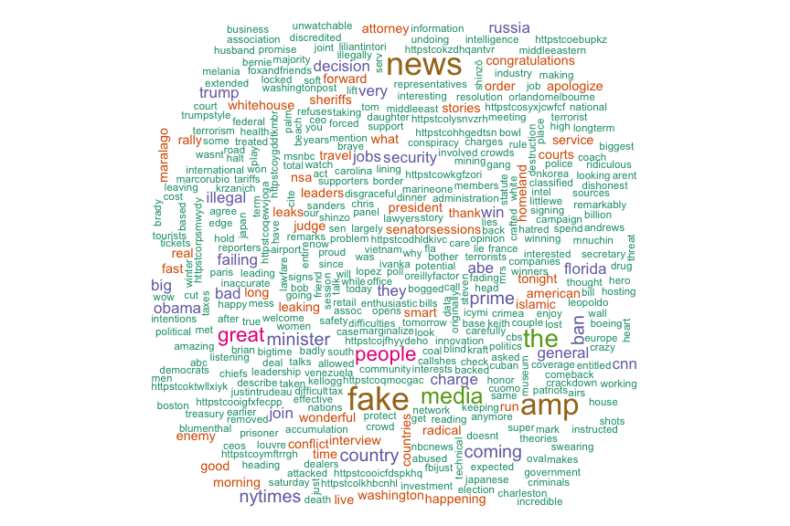

The project uses text as data and turns a public feed into a quick visual summary.
2017-02-08 · Word cloud · knitr · exploratory analysis
Trump Twitter Word Cloud
Word cloud generated from a time series of tweets, prepared as a reproducible knitr document.
